Catalog of applications
All images are on the images repository https://github.com/abcdesktopio/images/tree/main/artifact/4.4
For each application you will find the Dockerfile to rebuild the container image and the json file to install it using the console adminstration or the command line script.
There is more than 117 applications all ready packaged as a container image.
| Icon | Name | Dockerfile | Json | Repository Tags | Access Control | Category | Container Engine | Desktop File | Display Name | Icon File | Rules | View Visibility | Template |
|---|---|---|---|---|---|---|---|---|---|---|---|---|---|
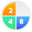 |
2048-alpine | Dockerfile | Json | ghcr.io/abcdesktopio/2048-alpine.d:4.4 |
{"permit":["all"]} |
games | ephemeral_container | org.gnome.TwentyFortyEight.desktop | 2048 (alpine gtk) | circle_2048.svg | {"homedir":{"default":true}} |
dock | ghcr.io/abcdesktopio/oc.template.alpine |
| 2048-ubuntu | Dockerfile | Json | ghcr.io/abcdesktopio/2048-ubuntu.d:4.4 |
{"permit":["all"]} |
games | pod_application | 2048-qt.desktop | 2048 (ubuntu qt) | circle_2048.svg | {"homedir":{"default":true}} |
ghcr.io/abcdesktopio/oc.template.ubuntu.minimal.26.04 | ||
| apachedirectorystudio | Dockerfile | Json | ghcr.io/abcdesktopio/apachedirectorystudio.d:4.4 |
{"permit":["all"]} |
development | Apache Directory Studio | account.svg | {"homedir":{"default":true}} |
ghcr.io/abcdesktopio/oc.template.ubuntu.22.04 | ||||
| astromenace | Dockerfile | Json | ghcr.io/abcdesktopio/astromenace.d:4.4 |
{"permit":["all"]} |
games | astromenace.desktop | astromenace | astromenace.svg | ghcr.io/abcdesktopio/oc.template.ubuntu.minimal.26.04 | ||||
| base | Dockerfile | Json | ghcr.io/abcdesktopio/base.d:4.4 |
{"permit":["all"]} |
development | libreoffice-base.desktop | Base | circle_libreoffice_base.svg | {"homedir":{"default":true}} |
ghcr.io/abcdesktopio/oc.template.ubuntu.libreoffice | |||
| beekeeperstudio | Dockerfile | Json | ghcr.io/abcdesktopio/beekeeperstudio.d:4.4 |
{"permit":["all"]} |
office | beekeeper-studio.desktop | Beekeeper-studio | beekeeper-studio.svg | {"homedir":{"default":true}} |
ghcr.io/abcdesktopio/oc.template.ubuntu.gtk.24.04 | |||
| blender | Dockerfile | Json | ghcr.io/abcdesktopio/blender.d:4.4 |
{"permit":["all"]} |
utilities,graphics | blender.desktop | Blender | circle_blender.svg | ghcr.io/abcdesktopio/oc.template.alpine | ||||
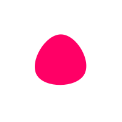 |
blobby | Dockerfile | Json | ghcr.io/abcdesktopio/blobby.d:4.4 |
{"permit":["all"]} |
games | blobby.desktop | blobby | blobby.svg | {"homedir":{"default":true}} |
ghcr.io/abcdesktopio/oc.template.ubuntu.minimal.22.04 | ||
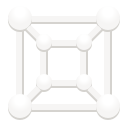 |
boxes | Dockerfile | Json | ghcr.io/abcdesktopio/boxes.d:4.4 |
{"permit":["all"]} |
development | org.gnome.Boxes.desktop | Gnome-boxes | org.gnome.Boxes.svg | {"homedir":{"default":true}} |
ghcr.io/abcdesktopio/oc.template.alpine | ||
| calc | Dockerfile | Json | ghcr.io/abcdesktopio/calc.d:4.4 |
{"permit":["all"]} |
office | libreoffice-calc.desktop | Calc | circle_libreoffice_calc.svg | {"homedir":{"default":true}} |
dock | ghcr.io/abcdesktopio/oc.template.ubuntu.libreoffice | ||
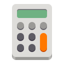 |
calculator | Dockerfile | Json | ghcr.io/abcdesktopio/calculator.d:4.4 |
{"permit":["all"]} |
utilities,office | org.gnome.Calculator.desktop | calculator | gnome_calculator.svg | {"homedir":{"default":true}} |
ghcr.io/abcdesktopio/oc.template.alpine.edge | ||
| chess | Dockerfile | Json | ghcr.io/abcdesktopio/chess.d:4.4 |
{"permit":["all"]} |
games | org.gnome.Chess.desktop | chess | circle_chess.svg | {"homedir":{"default":true}} |
ghcr.io/abcdesktopio/oc.template.alpine | |||
| chrome | Dockerfile | Json | ghcr.io/abcdesktopio/chrome.d:4.4 |
{"permit":["all"]} |
office | google-chrome.desktop | Chrome | circle_google-chrome.svg | {"homedir":{"default":true}} |
dock | ghcr.io/abcdesktopio/oc.template.ubuntu.gtk.26.04 | ||
| chromium | Dockerfile | Json | ghcr.io/abcdesktopio/chromium.d:4.4 |
{"permit":["all"]} |
office | chromium-browser.desktop | chromium | circle_chromium.svg | {"homedir":{"default":true}} |
ghcr.io/abcdesktopio/oc.template.debian.gtk | |||
| cmd.exe | Dockerfile | Json | ghcr.io/abcdesktopio/cmd.exe.d:4.4 |
{"permit":["all"]} |
utilities | cmd.exe wine (alpine) | cmd.svg | {"homedir":{"default":true}} |
ghcr.io/abcdesktopio/oc.template.alpine.wine | ||||
| cuda | Dockerfile | Json | ghcr.io/abcdesktopio/cuda.d:4.4 |
{"permit":["all"]} |
development | org.kde.konsole.desktop | cuda | nvidia.svg | {"homedir":{"default":true}} |
ghcr.io/abcdesktopio/oc.template.ubuntu.nvidia.22.04 | |||
| cuda.rockylinux | Dockerfile | Json | ghcr.io/abcdesktopio/cuda.rockylinux.d:4.4 |
{"permit":["all"]} |
development | org.gnome.Terminal.desktop | cuda.rockylinux | nvidia.svg | {"homedir":{"default":true}} |
ghcr.io/abcdesktopio/oc.template.rockylinux.nvidia.8 | |||
| cudademosuite | Dockerfile | Json | ghcr.io/abcdesktopio/cudademosuite.d:4.4 |
{"permit":["all"]} |
development | org.kde.konsole.desktop | cuda demo suite | nvidia.svg | {"homedir":{"default":true}} |
ghcr.io/abcdesktopio/oc.template.ubuntu.nvidia.22.04 | |||
| devsecops | Dockerfile | Json | ghcr.io/abcdesktopio/devsecops.d:4.4 |
{"permit":["all"]} |
TerminalEmulator | org.kde.konsole.desktop | DevSecOps | circle_security.svg | {"homedir":{"default":true}} |
dock | ghcr.io/abcdesktopio/oc.template.ubuntu.24.04 | ||
| Dia | Dockerfile | Json | ghcr.io/abcdesktopio/dia.d:4.4 |
{"permit":["all"]} |
graphics | org.gnome.Dia.desktop | Dia | circle_dia.svg | {"homedir":{"default":true}} |
ghcr.io/abcdesktopio/oc.template.ubuntu.gtk.24.04 | |||
| doom | Dockerfile | Json | ghcr.io/abcdesktopio/doom.d:4.4 |
{"permit":["all"]} |
games | Doom | doom.svg | ghcr.io/abcdesktopio/oc.template.ubuntu.minimal.22.04 | |||||
| draw | Dockerfile | Json | ghcr.io/abcdesktopio/draw.d:4.4 |
{"permit":["all"]} |
office | libreoffice-draw.desktop | Draw | circle_libreoffice_draw.svg | dock | ghcr.io/abcdesktopio/oc.template.ubuntu.libreoffice | |||
| drawio | Dockerfile | Json | ghcr.io/abcdesktopio/drawio.d:4.4 |
{"permit":["all"]} |
graphics | drawio.desktop | draw.io | circle_drawio.svg | {"homedir":{"default":true}} |
ghcr.io/abcdesktopio/oc.template.ubuntu.gtk.26.04 | |||
| edge | Dockerfile | Json | ghcr.io/abcdesktopio/edge.d:4.4 |
{"permit":["all"]} |
office | ephemeral_container | microsoft-edge.desktop | Microsoft Edge | circle_microsoft-edge.svg | {"homedir":{"default":true}} |
dock | ghcr.io/abcdesktopio/oc.template.ubuntu.gtk.24.04 | |
| edge_pod | Dockerfile | Json | ghcr.io/abcdesktopio/edge_pod.d:4.4 |
{"permit":["all"]} |
office | pod_application | microsoft-edge-pod.desktop | Microsoft Edge (Pod) | circle_microsoft-edge.svg | {"homedir":{"default":true}} |
ghcr.io/abcdesktopio/oc.template.ubuntu.gtk.24.04 | ||
| eog | Dockerfile | Json | ghcr.io/abcdesktopio/eog.d:4.4 |
{"permit":["all"]} |
graphics | org.gnome.eog.desktop | eog | circle_eog.svg | {"homedir":{"default":true}} |
ghcr.io/abcdesktopio/oc.template.ubuntu.gtk.24.04 | |||
| Evince | Dockerfile | Json | ghcr.io/abcdesktopio/evince.d:4.4 |
{"permit":["all"]} |
office | org.gnome.Evince.desktop | Evince | circle_acroread.svg | {"homedir":{"default":true}} |
ghcr.io/abcdesktopio/oc.template.alpine | |||
| evolution | Dockerfile | Json | ghcr.io/abcdesktopio/evolution.d:4.4 |
{"permit":["all"]} |
office | org.gnome.Evolution.desktop | Evolution | evolution.svg | {"homedir":{"default":true}} |
ghcr.io/abcdesktopio/oc.template.ubuntu.minimal.22.04 | |||
| file-roller | Dockerfile | Json | ghcr.io/abcdesktopio/file-roller.d:4.4 |
{"permit":["all"]} |
utilities | org.gnome.FileRoller.desktop | file-roller | circle_file-roller.svg | {"homedir":{"default":true}} |
ghcr.io/abcdesktopio/oc.template.ubuntu.gtk.26.04 | |||
| filelight | Dockerfile | Json | ghcr.io/abcdesktopio/filelight.d:4.4 |
{"permit":["all"]} |
utilities | org.kde.filelight.desktop | Filelight | filelight.svg | {"homedir":{"default":true}} |
ghcr.io/abcdesktopio/oc.template.ubuntu.minimal.26.04 | |||
| filezilla | Dockerfile | Json | ghcr.io/abcdesktopio/filezilla.d:4.4 |
{"permit":["all"]} |
utilities | filezilla.desktop | filezilla (alpine) | circle_filezilla.svg | {"homedir":{"default":true}} |
ghcr.io/abcdesktopio/oc.template.alpine | |||
| Firefox-esr-24-04 | Dockerfile | Json | ghcr.io/abcdesktopio/firefox-esr-24-04.d:4.4 |
{"permit":["all"]} |
office | firefox-esr-ubuntu-24-04.desktop | Firefox (esr ubuntu 24.04) | circle_firefox.svg | {"homedir":{"default":true}} |
ghcr.io/abcdesktopio/oc.template.ubuntu.24.04 | |||
| Firefox-esr | Dockerfile | Json | ghcr.io/abcdesktopio/firefox-esr.d:4.4 |
{"permit":["all"]} |
office | firefox-esr.desktop | Firefox (esr) | circle_firefox.svg | {"homedir":{"default":true}} |
ghcr.io/abcdesktopio/oc.template.ubuntu.24.04 | |||
| Firefox | Dockerfile | Json | ghcr.io/abcdesktopio/firefox.d:4.4 |
{"permit":["all"]} |
office | firefox-ubuntu-24-04.desktop | Firefox (ubuntu) | circle_firefox.svg | {"homedir":{"default":true}} |
dock | ghcr.io/abcdesktopio/oc.template.ubuntu.24.04 | ||
| Firefox_pod | Dockerfile | Json | ghcr.io/abcdesktopio/firefox_pod.d:4.4 |
{"permit":["all"]} |
office | pod_application | firefox-ubuntu-24-04-pod.desktop | Firefox_pod (ubuntu) | circle_firefox.svg | {"homedir":{"default":true}} |
ghcr.io/abcdesktopio/oc.template.ubuntu.24.04 | ||
| FirefoxAlmaLinux | Dockerfile | Json | ghcr.io/abcdesktopio/firefoxalmalinux.d:4.4 |
{"permit":["all"]} |
office | firefox-almalinux10.desktop | Firefox (Alma Linux) | circle_firefox.svg | {"homedir":{"default":true}} |
ghcr.io/abcdesktopio/oc.template.almalinux.gtk.10 | |||
| FirefoxAlpine | Dockerfile | Json | ghcr.io/abcdesktopio/firefoxalpine.d:4.4 |
{"permit":["all"]} |
office | firefox-alpine-edge.desktop | Firefox (alpine) | circle_firefox.svg | {"homedir":{"default":true}} |
ghcr.io/abcdesktopio/oc.template.alpine.edge.gtk | |||
| FirefoxRockyLinux | Dockerfile | Json | ghcr.io/abcdesktopio/firefoxrockylinux.d:4.4 |
{"permit":["all"]} |
office | firefox-rockylinux9.desktop | Firefox (Rocky Linux) | circle_firefox.svg | {"homedir":{"default":true}} |
ghcr.io/abcdesktopio/oc.template.rockylinux.gtk.9 | |||
| flare | Dockerfile | Json | ghcr.io/abcdesktopio/flare.d:4.4 |
{"permit":["all"]} |
games | flare.desktop | flare | flare.svg | ghcr.io/abcdesktopio/oc.template.ubuntu.gtk.26.04 | ||||
| frozen-bubble | Dockerfile | Json | ghcr.io/abcdesktopio/frozen-bubble.d:4.4 |
{"permit":["all"]} |
games | frozen-bubble | frozen-bubble.svg | ghcr.io/abcdesktopio/oc.template.ubuntu.minimal.26.04 | |||||
| GCompris | Dockerfile | Json | ghcr.io/abcdesktopio/gcompris.d:4.4 |
{"permit":["all"]} |
education | GCompris | gcompris.svg | {"homedir":{"default":true}} |
ghcr.io/abcdesktopio/oc.template.ubuntu.20.04 | ||||
| geany | Dockerfile | Json | ghcr.io/abcdesktopio/geany.d:4.4 |
{"permit":["all"]} |
development | geany.desktop | Geany | geany.svg | {"homedir":{"default":true}} |
dock | ghcr.io/abcdesktopio/oc.template.alpine | ||
| Gedit | Dockerfile | Json | ghcr.io/abcdesktopio/gedit.d:4.4 |
{"permit":["all"]} |
office | gedit.desktop | Gedit | gedit.svg | {"homedir":{"default":true}} |
ghcr.io/abcdesktopio/oc.template.alpine | |||
| gElemental | Dockerfile | Json | ghcr.io/abcdesktopio/gelemental.d:4.4 |
{"permit":["all"]} |
education | gelemental.desktop | gElemental | gelemental.svg | ghcr.io/abcdesktopio/oc.template.ubuntu.minimal.22.04 | ||||
| Geogebra | Dockerfile | Json | ghcr.io/abcdesktopio/geogebra.d:4.4 |
{"permit":["all"]} |
education | Geogebra | geogebra.svg | {"homedir":{"default":true}} |
ghcr.io/abcdesktopio/oc.template.ubuntu.gtk.26.04 | ||||
| Gimp | Dockerfile | Json | ghcr.io/abcdesktopio/gimp.d:4.4 |
{"permit":["all"]} |
graphics | gimp.desktop | Gimp | circle_gimp.svg | {"homedir":{"default":true}} |
ghcr.io/abcdesktopio/oc.template.ubuntu.gtk.24.04 | |||
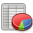 |
Gnumeric | Dockerfile | Json | ghcr.io/abcdesktopio/gnumeric.d:4.4 |
{"permit":["all"]} |
office | gnumeric.desktop | Gnumerix (alpine) | gnumeric.svg | {"homedir":{"default":true}} |
ghcr.io/abcdesktopio/oc.template.alpine | ||
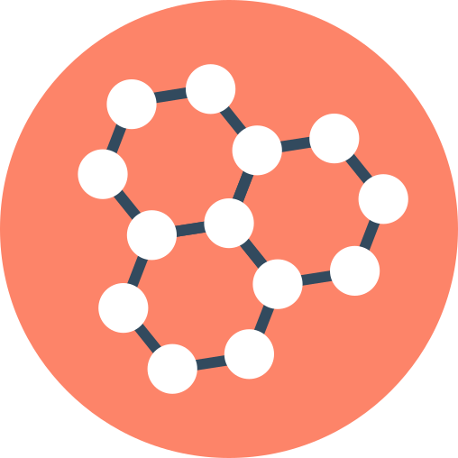 |
Golly | Dockerfile | Json | ghcr.io/abcdesktopio/golly.d:4.4 |
{"permit":["all"]} |
education | Golly | golly.svg | {"homedir":{"default":true}} |
ghcr.io/abcdesktopio/oc.template.ubuntu.gtk.26.04 | |||
| hyper | Dockerfile | Json | ghcr.io/abcdesktopio/hyper.d:4.4 |
{"permit":["all"]} |
utilities | hyper.desktop | hyper | hyper.svg | {"homedir":{"default":true}} |
ghcr.io/abcdesktopio/oc.template.ubuntu.minimal.22.04 | |||
| impress | Dockerfile | Json | ghcr.io/abcdesktopio/impress.d:4.4 |
{"permit":["all"]} |
office | libreoffice-impress.desktop | Impress | circle_libreoffice_impress.svg | {"homedir":{"default":true}} |
dock | ghcr.io/abcdesktopio/oc.template.ubuntu.libreoffice | ||
| inkscape | Dockerfile | Json | ghcr.io/abcdesktopio/inkscape.d:4.4 |
{"permit":["all"]} |
graphics | org.inkscape.Inkscape.desktop | inkscape | circle_inkscape.svg | {"homedir":{"default":true}} |
ghcr.io/abcdesktopio/oc.template.alpine | |||
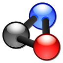 |
Kalzium | Dockerfile | Json | ghcr.io/abcdesktopio/kalzium.d:4.4 |
{"permit":["all"]} |
education | org.kde.kalzium.desktop | Kalzium | kalzium.svg | ghcr.io/abcdesktopio/oc.template.alpine | |||
| kDiamond | Dockerfile | Json | ghcr.io/abcdesktopio/kdiamond.d:4.4 |
{"permit":["all"]} |
games | kDiamond | kdiamond.svg | ghcr.io/abcdesktopio/oc.template.alpine | |||||
| Kgeography | Dockerfile | Json | ghcr.io/abcdesktopio/kgeography.d:4.4 |
{"permit":["all"]} |
education | org.kde.kgeography.desktop | Kgeography | kgeography.svg | {"homedir":{"default":true}} |
ghcr.io/abcdesktopio/oc.template.alpine | |||
| kigo | Dockerfile | Json | ghcr.io/abcdesktopio/kigo.d:4.4 |
{"permit":["all"]} |
games | org.kde.kigo.desktop | kigo | kigo.svg | {"homedir":{"default":false}} |
ghcr.io/abcdesktopio/oc.template.ubuntu.gtk.24.04 | |||
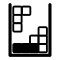 |
Klickety | Dockerfile | Json | ghcr.io/abcdesktopio/klickety.d:4.4 |
{"permit":["all"]} |
games | Klickety | klickety.svg | ghcr.io/abcdesktopio/oc.template.ubuntu.minimal.22.04 | ||||
| klotski | Dockerfile | Json | ghcr.io/abcdesktopio/klotski.d:4.4 |
{"permit":["all"]} |
games | gnome-klotski.desktop | klotski | circle_gnome-klotski.svg | ghcr.io/abcdesktopio/oc.template.ubuntu.gtk.26.04 | ||||
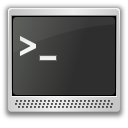 |
konsole | Dockerfile | Json | ghcr.io/abcdesktopio/konsole.d:4.4 |
{"permit":["all"]} |
development | konsole | konsole.svg | {"homedir":{"default":true}} |
ghcr.io/abcdesktopio/oc.template.alpine | |||
| konsolephemeralcontainer | Dockerfile | Json | ghcr.io/abcdesktopio/konsolephemeralcontainer.d:4.4 |
{"permit":["all"]} |
development | ephemeral_container | org.kde.konsole.desktop | konsole [ephemeral_container] | konsoleephemeral.svg | {"homedir":{"default":true}} |
ghcr.io/abcdesktopio/oc.template.alpine | ||
| konsolepod | Dockerfile | Json | ghcr.io/abcdesktopio/konsolepod.d:4.4 |
{"permit":["all"]} |
development | pod_application | org.kde.konsole.desktop | konsole [pod] | konsole.svg | {"homedir":{"default":true}} |
ghcr.io/abcdesktopio/oc.template.alpine | ||
| konsolepodbronze | Dockerfile | Json | ghcr.io/abcdesktopio/konsolepodbronze.d:4.4 |
{"permit":["all"]} |
development | pod_application | org.kde.konsole.desktop | konsole bronze [pod] | konsolebronze.svg | {"homedir":{"default":true}} |
ghcr.io/abcdesktopio/oc.template.alpine | ||
| konsolepodgold | Dockerfile | Json | ghcr.io/abcdesktopio/konsolepodgold.d:4.4 |
{"permit":["all"]} |
development | pod_application | org.kde.konsole.desktop | konsole gold [pod] | konsolegold.svg | {"homedir":{"default":true}} |
ghcr.io/abcdesktopio/oc.template.alpine | ||
| konsolepodsilver | Dockerfile | Json | ghcr.io/abcdesktopio/konsolepodsilver.d:4.4 |
{"permit":["all"]} |
development | pod_application | org.kde.konsole.desktop | konsole silver [pod] | konsolesilver.svg | {"homedir":{"default":true}} |
ghcr.io/abcdesktopio/oc.template.alpine | ||
| kSquares | Dockerfile | Json | ghcr.io/abcdesktopio/ksquares.d:4.4 |
{"permit":["all"]} |
games | kSquares | ksquares.svg | ghcr.io/abcdesktopio/oc.template.ubuntu.22.04 | |||||
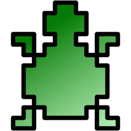 |
kTurtle | Dockerfile | Json | ghcr.io/abcdesktopio/kturtle.d:4.4 |
{"permit":["all"]} |
education | org.kde.kturtle.desktop | kTurtle | kturtle.svg | ghcr.io/abcdesktopio/oc.template.alpine | |||
| Leocad | Dockerfile | Json | ghcr.io/abcdesktopio/leocad.d:4.4 |
{"permit":["all"]} |
games | Leocad | leocad.svg | {"homedir":{"default":true}} |
ghcr.io/abcdesktopio/oc.template.ubuntu.minimal.22.04 | ||||
| LibreCAD | Dockerfile | Json | ghcr.io/abcdesktopio/librecad.d:4.4 |
{"permit":["all"]} |
development | LibreCAD | librecad.svg | {"homedir":{"default":true}} |
ghcr.io/abcdesktopio/oc.template.ubuntu.minimal.22.04 | ||||
| mahjongg | Dockerfile | Json | ghcr.io/abcdesktopio/mahjongg.d:4.4 |
{"permit":["all"]} |
games | gnome-mahjongg.desktop | mahjongg | circle_gnome-mahjongg.svg | ghcr.io/abcdesktopio/oc.template.ubuntu.gtk.26.04 | ||||
| maps | Dockerfile | Json | ghcr.io/abcdesktopio/maps.d:4.4 |
{"permit":["all"]} |
utilities,office | org.gnome.Maps.desktop | maps | org.gnome.Maps.svg | {"homedir":{"default":true}} |
ghcr.io/abcdesktopio/oc.template.alpine | |||
| math | Dockerfile | Json | ghcr.io/abcdesktopio/math.d:4.4 |
{"permit":["all"]} |
office | libreoffice-math.desktop | Math | circle_libreoffice_math.svg | {"homedir":{"default":true}} |
ghcr.io/abcdesktopio/oc.template.ubuntu.libreoffice | |||
| minecraft | Dockerfile | Json | ghcr.io/abcdesktopio/minecraft.d:4.4 |
{"permit":["all"]} |
games | minecraft-launcher.desktop | minecraft | circle_minecraft.svg | {"homedir":{"default":true}} |
ghcr.io/abcdesktopio/oc.template.ubuntu.gtk.24.04 | |||
| Mines | Dockerfile | Json | ghcr.io/abcdesktopio/mines.d:4.4 |
{"permit":["all"]} |
games | org.gnome.Mines.desktop | gnome-mines (alpine) | circle_gnome-mines.svg | ghcr.io/abcdesktopio/oc.template.alpine | ||||
| mongodb-compass | Dockerfile | Json | ghcr.io/abcdesktopio/mongodb-compass.d:4.4 |
{"permit":["all"]} |
utilities,office | mongodb-compass.desktop | Mongodb Compass | mongodb-compass.svg | {"homedir":{"default":true}} |
ghcr.io/abcdesktopio/oc.template.ubuntu.gtk.24.04 | |||
| nautilus | Dockerfile | Json | ghcr.io/abcdesktopio/nautilus.d:4.4 |
{"permit":["all"]} |
utilities,office | org.gnome.Nautilus.desktop | FileManager | circle_filemanager.svg | {"homedir":{"default":true}} |
dock | ghcr.io/abcdesktopio/oc.template.ubuntu.gtk.24.04 | ||
| notepad-wine | Dockerfile | Json | ghcr.io/abcdesktopio/notepad-wine.d:4.4 |
{"permit":["all"]} |
utilities | Notepad Wine (alpine) | notepad.svg | {"homedir":{"default":true}} |
ghcr.io/abcdesktopio/oc.template.alpine.wine | ||||
| notepadqq | Dockerfile | Json | ghcr.io/abcdesktopio/notepadqq.d:4.4 |
{"permit":["all"]} |
utilities,development | notepadqq.desktop | notepadqq | notepadqq.svg | {"homedir":{"default":true}} |
ghcr.io/abcdesktopio/oc.template.ubuntu.gtk.26.04 | |||
| octave | Dockerfile | Json | ghcr.io/abcdesktopio/octave.d:4.4 |
{"permit":["all"]} |
development | www.octave.org-octave.desktop | octave | Gnu-octave-logo.svg | {"homedir":{"default":true}} |
ghcr.io/abcdesktopio/oc.template.ubuntu.minimal.22.04 | |||
| Pinta | Dockerfile | Json | ghcr.io/abcdesktopio/pinta.d:4.4 |
{"permit":["all"]} |
utilities,office | pinta.desktop | Pinta | pinta.svg | {"homedir":{"default":true}} |
ghcr.io/abcdesktopio/oc.template.ubuntu.gtk.26.04 | |||
| Planner | Dockerfile | Json | ghcr.io/abcdesktopio/planner.d:4.4 |
{"permit":["all"]} |
office | Planner | planner.svg | {"homedir":{"default":true}} |
ghcr.io/abcdesktopio/oc.template.ubuntu.minimal.22.04 | ||||
| postman | Dockerfile | Json | ghcr.io/abcdesktopio/postman.d:4.4 |
{"permit":["all"]} |
development | org.kde.postman.desktop | Postman | circle_postman.svg | {"homedir":{"default":true}} |
ghcr.io/abcdesktopio/oc.template.ubuntu.gtk.20.04 | |||
| powershell | Dockerfile | Json | ghcr.io/abcdesktopio/powershell.d:4.4 |
{"permit":["all"]} |
utilities | Powershell | powershell.svg | {"homedir":{"default":true}} |
ghcr.io/abcdesktopio/oc.template.alpine | ||||
| putty-unix | Dockerfile | Json | ghcr.io/abcdesktopio/putty-unix.d:4.4 |
{"permit":["all"]} |
utilities | Putty Unix | circle_putty-unix.svg | {"homedir":{"default":true}} |
ghcr.io/abcdesktopio/oc.template.alpine.wine | ||||
| putty-wine | Dockerfile | Json | ghcr.io/abcdesktopio/putty-wine.d:4.4 |
{"permit":["all"]} |
utilities | Putty Wine (alpine) | putty.svg | {"homedir":{"default":true}} |
ghcr.io/abcdesktopio/oc.template.alpine.minimal | ||||
| qterminalpod | Dockerfile | Json | ghcr.io/abcdesktopio/qterminalpod.d:4.4 |
{"permit":["all"]} |
development | pod_application | qterminal.desktop | qterminal [Pod] | utilities-terminal.svg | {"homedir":{"default":false}} |
ghcr.io/abcdesktopio/oc.template.alpine.minimal | ||
| remarkable | Dockerfile | Json | ghcr.io/abcdesktopio/remarkable.d:4.4 |
{"permit":["all"]} |
office | remarkable.desktop | Remarkable | remarkable.svg | {"homedir":{"default":true}} |
ghcr.io/abcdesktopio/oc.template.ubuntu.18.04 | |||
| remmina | Dockerfile | Json | ghcr.io/abcdesktopio/remmina.d:4.4 |
{"permit":["all"]} |
office | remmina-file.desktop | Remmina | remmina.svg | {"homedir":{"default":true}} |
ghcr.io/abcdesktopio/oc.template.ubuntu.gtk.26.04 | |||
| rhythmbox | Dockerfile | Json | ghcr.io/abcdesktopio/rhythmbox.d:4.4 |
{"permit":["all"]} |
utilities | org.gnome.Rhythmbox3.desktop | rhythmbox | circle_rhythmbox.svg | ghcr.io/abcdesktopio/oc.template.alpine | ||||
| Robots | Dockerfile | Json | ghcr.io/abcdesktopio/robots.d:4.4 |
{"permit":["all"]} |
games | gnome-robots.desktop | Robots | circle_gnome-robots.svg | ghcr.io/abcdesktopio/oc.template.ubuntu.minimal.22.04 | ||||
| Shotcut | Dockerfile | Json | ghcr.io/abcdesktopio/shotcut.d:4.4 |
{"permit":["all"]} |
graphics | org.shotcut.Shotcut.desktop | Shotcut | circle_shotcut.svg | {"homedir":{"default":true}} |
ghcr.io/abcdesktopio/oc.template.ubuntu.gtk.26.04 | |||
| Stellarium | Dockerfile | Json | ghcr.io/abcdesktopio/stellarium.d:4.4 |
{"permit":["all"]} |
education | org.stellarium.Stellarium.desktop | Stellarium | stellarium.svg | ghcr.io/abcdesktopio/oc.template.alpine.3.23 | ||||
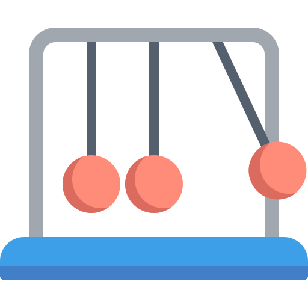 |
Step | Dockerfile | Json | ghcr.io/abcdesktopio/step.d:4.4 |
{"permit":["all"]} |
education | org.kde.step.desktop | Step | step.svg | {"homedir":{"default":true}} |
ghcr.io/abcdesktopio/oc.template.alpine | ||
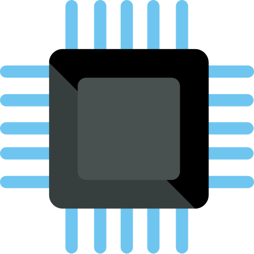 |
stress | Dockerfile | Json | ghcr.io/abcdesktopio/stress.d:4.4 |
{"permit":["all"]} |
development | org.kde.konsole.desktop | stress | stress.svg | {"homedir":{"default":true}} |
ghcr.io/abcdesktopio/oc.template.ubuntu.24.04 | ||
| sublime-Text | Dockerfile | Json | ghcr.io/abcdesktopio/sublime-text.d:4.4 |
{"permit":["all"]} |
development | sublime_text.desktop | sublime-Text | circle_sublime-text.svg | {"homedir":{"default":true}} |
ghcr.io/abcdesktopio/oc.template.ubuntu.gtk.24.04 | |||
| sudoku | Dockerfile | Json | ghcr.io/abcdesktopio/sudoku.d:4.4 |
{"permit":["all"]} |
games | org.gnome.Sudoku.desktop | sudoku | org.gnome.Sudoku.svg | {"homedir":{"default":true}} |
ghcr.io/abcdesktopio/oc.template.alpine | |||
| supertux2 | Dockerfile | Json | ghcr.io/abcdesktopio/supertux2.d:4.4 |
{"permit":["all"]} |
games | supertux2.desktop | supertux2 | circle_supertux.svg | ghcr.io/abcdesktopio/oc.template.alpine.minimal | ||||
| swell-foop | Dockerfile | Json | ghcr.io/abcdesktopio/swell-foop.d:4.4 |
{"permit":["all"]} |
games | org.gnome.SwellFoop.desktop | swell-foop | circle_swell-foop.svg | ghcr.io/abcdesktopio/oc.template.ubuntu.minimal.26.04 | ||||
| taquin | Dockerfile | Json | ghcr.io/abcdesktopio/taquin.d:4.4 |
{"permit":["all"]} |
games | org.gnome.Taquin.desktop | taquin | org.gnome.Taquin.svg | {"homedir":{"default":true}} |
ghcr.io/abcdesktopio/oc.template.alpine | |||
| Terminal | Dockerfile | Json | ghcr.io/abcdesktopio/terminal.d:4.4 |
{"permit":["all"]} |
TerminalEmulator | org.kde.konsole.desktop | Terminal | circle_xterm.svg | {"homedir":{"default":true}} |
dock | ghcr.io/abcdesktopio/oc.template.ubuntu.24.04 | ||
| terminalephemeral | Dockerfile | Json | ghcr.io/abcdesktopio/terminalephemeral.d:4.4 |
{"permit":["all"]} |
development | ephemeral_container | org.kde.konsole.desktop | Terminal [ephemeral container] | utilities-terminal.svg | {"homedir":{"default":false}} |
ghcr.io/abcdesktopio/oc.template.ubuntu.24.04 | ||
| Tetravex | Dockerfile | Json | ghcr.io/abcdesktopio/tetravex.d:4.4 |
{"permit":["all"]} |
games | Tetravex | gnome-tetravex.svg | {"homedir":{"default":true}} |
ghcr.io/abcdesktopio/oc.template.ubuntu.gtk.26.04 | ||||
| thunderbird | Dockerfile | Json | ghcr.io/abcdesktopio/thunderbird.d:4.4 |
{"permit":["all"]} |
office | thunderbird.desktop | Thunderbird | thunderbird.svg | {"homedir":{"default":true}} |
ghcr.io/abcdesktopio/oc.template.ubuntu.minimal.22.04 | |||
| vice | Dockerfile | Json | ghcr.io/abcdesktopio/vice.d:4.4 |
{"permit":["all"]} |
games | x64.desktop | Commodore64 | c64.svg | ghcr.io/abcdesktopio/oc.template.ubuntu.gtk.18.04 | ||||
| vlc | Dockerfile | Json | ghcr.io/abcdesktopio/vlc.d:4.4 |
{"permit":["all"]} |
utilities,office,graphics | vlc.desktop | videolan | circle_vlc.svg | {"homedir":{"default":true}} |
ghcr.io/abcdesktopio/oc.template.alpine | |||
| VSCode | Dockerfile | Json | ghcr.io/abcdesktopio/vscode.d:4.4 |
{"permit":["all"]} |
development | code.desktop | VSCode | circle_visual-studio-code.svg | {"homedir":{"default":true}} |
dock | ghcr.io/abcdesktopio/oc.template.ubuntu.gtk.24.04 | ||
| weather | Dockerfile | Json | ghcr.io/abcdesktopio/weather.d:4.4 |
{"permit":["all"]} |
office | org.gnome.Weather.desktop | weather | org.gnome.Weather.svg | {"homedir":{"default":true}} |
ghcr.io/abcdesktopio/oc.template.alpine | |||
| winefile-wine | Dockerfile | Json | ghcr.io/abcdesktopio/winefile-wine.d:4.4 |
{"permit":["all"]} |
utilities | Winefile Wine (alpine) | winefile.svg | {"homedir":{"default":true}} |
ghcr.io/abcdesktopio/oc.template.alpine.wine | ||||
| winemine-wine | Dockerfile | Json | ghcr.io/abcdesktopio/winemine-wine.d:4.4 |
{"permit":["all"]} |
games | WineMine Wine (alpine) | winemine.svg | {"homedir":{"default":true}} |
ghcr.io/abcdesktopio/oc.template.alpine.wine | ||||
| winhelp-wine | Dockerfile | Json | ghcr.io/abcdesktopio/winhelp-wine.d:4.4 |
{"permit":["all"]} |
utilities | Winhelp Wine | winhelp.svg | {"homedir":{"default":true}} |
ghcr.io/abcdesktopio/oc.template.alpine.wine | ||||
| winscp-wine | Dockerfile | Json | ghcr.io/abcdesktopio/winscp-wine.d:4.4 |
{"permit":["all"]} |
utilities | WinSCP | winscp.svg | {"homedir":{"default":true}} |
ghcr.io/abcdesktopio/oc.template.alpine.wine | ||||
| wireshark | Dockerfile | Json | ghcr.io/abcdesktopio/wireshark.d:4.4 |
{"permit":["all"]} |
utilities | org.wireshark.Wireshark.desktop | wireshark (alpine) | wireshark.svg | {"homedir":{"default":true}} |
ghcr.io/abcdesktopio/oc.template.alpine | |||
| writer | Dockerfile | Json | ghcr.io/abcdesktopio/writer.d:4.4 |
{"permit":["all"]} |
office | libreoffice-writer.desktop | Writer | circle_libreoffice_writer.svg | {"homedir":{"default":true}} |
dock | ghcr.io/abcdesktopio/oc.template.ubuntu.libreoffice | ||
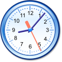 |
xclock | Dockerfile | Json | ghcr.io/abcdesktopio/xclock.d:4.4 |
{"permit":["all"]} |
utilities | ephemeral_container | Xclock | xclock.svg | {"homedir":{"default":false}} |
ghcr.io/abcdesktopio/oc.template.ubuntu.minimal.26.04 | ||
| xedit | Dockerfile | Json | ghcr.io/abcdesktopio/xedit.d:4.4 |
{"permit":["all"]} |
utilities | ephemeral_container | Xedit | circle_xedit.svg | {"homedir":{"default":true}} |
ghcr.io/abcdesktopio/oc.template.ubuntu.minimal.26.04 | |||
| xeyes | Dockerfile | Json | ghcr.io/abcdesktopio/xeyes.d:4.4 |
{"permit":["all"]} |
utilities | xeyes | circle_xfce4-eyes.svg | ghcr.io/abcdesktopio/oc.template.alpine | |||||
| xman | Dockerfile | Json | ghcr.io/abcdesktopio/xman.d:4.4 |
{"permit":["all"]} |
utilities | ephemeral_container | Xman | circle_xorg.svg | ghcr.io/abcdesktopio/oc.template.ubuntu.minimal.26.04 | ||||
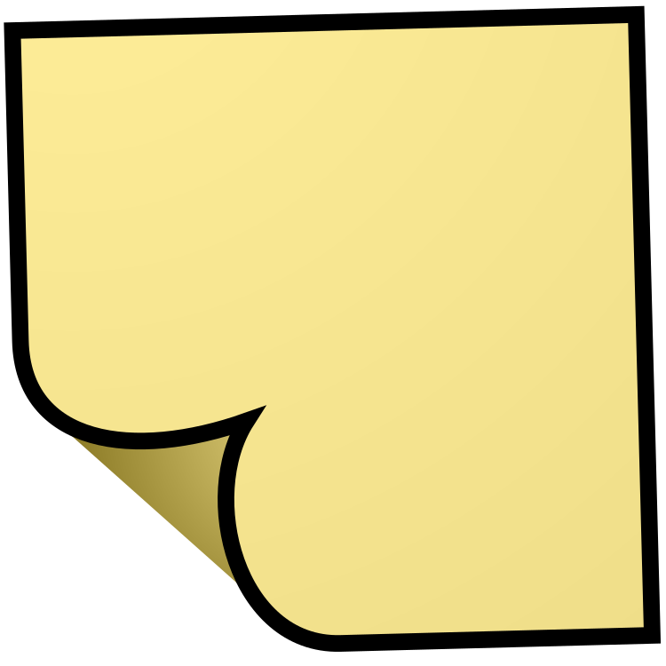 |
xpad | Dockerfile | Json | ghcr.io/abcdesktopio/xpad.d:4.4 |
{"permit":["all"]} |
utilities | xpad.desktop | Xpad | xpad.svg | {"homedir":{"default":true}} |
ghcr.io/abcdesktopio/oc.template.ubuntu.gtk.26.04 | ||
| xterm | Dockerfile | Json | ghcr.io/abcdesktopio/xterm.d:4.4 |
{"permit":["all"]} |
development | xterm.desktop | Xterm (sudo) | circle_xterm.svg | {"homedir":{"default":true}} |
ghcr.io/abcdesktopio/oc.template.alpine |